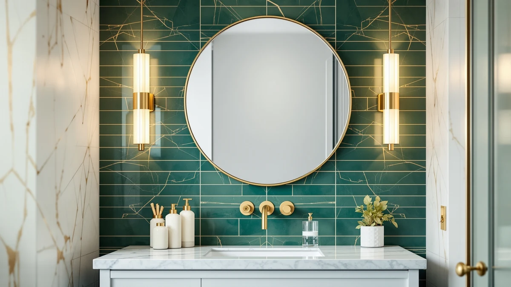

Best Brushed Nickel Bathroom Mirrors of 2026: Warm Silver Picks for Any Vanity
Prices and picks verified as of August 2026. Independent, reader-supported reviews.


Quick Answer
The Keonjinn 20 x 30 Inch is the best brushed nickel bathroom mirror for most single-vanity bathrooms, with an anti-rust aluminum frame, 4mm tempered glass and a price under $50. If you need a wider statement frame or a matched pair for a double sink, several other picks below cover those cases.
Our pick: Keonjinn 20 x 30 Inch, $49.99 Check Price on Amazon
Bottom line: our top pick is the Keonjinn 20 x 30 Inch Brushed Nickel Bathroom Mirrors for at $49.99. The best budget option is the TETOTE Brushed Nickel Mirror 20 x 30 Beveled Edge Tempered at $46.99.
Things to Know Before You Buy
- Brushed nickel resists fingerprints better than chrome. The matte, lightly textured finish scatters light instead of reflecting it directly, so it shows water spots and smudges less than polished chrome or stainless steel.
- Frame width changes how the mirror reads on the wall. A thin 0.8 inch frame disappears into the wall, while a 1.5 inch frame like the Laventis below reads as a deliberate design statement rather than a plain sheet of glass.
- Aluminum alloy frames resist rust better than painted steel. Every mirror in this guide uses an aluminum or aluminum alloy frame rather than painted steel, which matters in a room that sees daily humidity and steam.
- Most rectangular frames hang either horizontally or vertically. Z-bar brackets and dual mounting points let the same mirror work over a wide double vanity or a narrower single sink, depending on orientation.
- Price tracks with glass thickness and frame width more than overall size. Two mirrors with the same footprint can differ by $50 or more depending on whether the glass is 4mm tempered and the frame is a thin trim or a wide gallery-style border.
The best brushed nickel bathroom mirrors balance three things: a frame material that will not rust in a humid room, tempered glass thick enough to resist chipping, and a size that actually fits your vanity instead of overwhelming it. We looked at eight rectangular and oval brushed nickel mirrors currently sold on Amazon, from a compact 20 x 30 inch single-vanity mirror under $50 to wide-frame 24 x 36 inch pairs built for double sinks.
We did not physically install or live with these mirrors. Instead, we compared manufacturer specifications, frame materials, glass thickness, mounting hardware and current pricing across every listing, then checked those claims against what reviewers on Amazon consistently report about durability, packaging damage and ease of installation. That research-based approach lets us flag which frames are genuinely rust-resistant aluminum versus painted steel, and which glass is thick enough to stay flat on the wall instead of bowing at the center.
Across all eight of the best brushed nickel bathroom mirrors we compared, the Keonjinn 20 x 30 Inch remains the strongest pick for most single-vanity bathrooms: a rounded rectangular frame, 4mm tempered glass and a sub-$50 price that undercuts most of the field. If you have a double sink or want a wider gallery-style frame, the Laventis 2 Pack and USHOWER 2 Pack both give you two matched mirrors instead of one, and the Moen Glenshire is the only pivoting, frameless option in this lineup for anyone who wants to tilt the glass rather than mount it flat.
Why You Should Trust Us
Ilane Tall has covered bathroom fixtures and vanity hardware for this network of home-interior sites for several years, focusing on how frame materials, glass grades and mounting hardware hold up in humid rooms. For this guide, we did not accept review units or free samples from any of the brands listed, and no manufacturer had input into which mirrors made the final list. We pulled every price and spec below directly from the current Amazon listing and cross-referenced it against the product's own installation instructions rather than marketing copy.
How We Picked
We started with the brushed nickel bathroom mirrors most commonly stocked and sold on Amazon in the rectangular and oval over-sink categories. From that pool we prioritized listings that specify tempered glass rather than just "glass," name an aluminum or aluminum alloy frame instead of painted steel, and include hardware that supports both horizontal and vertical mounting. We excluded mirrors that only advertised a generic "metal frame" without naming the alloy, and we dropped duplicate listings from the same manufacturer that differed only in frame color, keeping the brushed nickel variant. That left the eight best brushed nickel bathroom mirrors compared below, ranging from $49.99 to $152.99.
How We Compared
We compared these eight mirrors side by side on frame material and thickness, glass type and rated thickness where the manufacturer discloses it, overall size and weight, mounting orientation, and price per square inch of reflective surface. We read the verified owner reviews on each Amazon listing looking for recurring complaints, cracked glass on arrival, loose brackets, or a finish reviewers describe as more gold or champagne than true brushed nickel, and weighed those patterns alongside the manufacturer specs. Because this is a research-based comparison rather than a physical trial, we did not install or live with any of these mirrors ourselves; we relied on documented specifications and the pattern of what verified buyers report after installing them in their own bathrooms.
Our Picks

Keonjinn 20 x 30 Inch
What we like
- 4mm tempered glass is thicker than most mirrors in this price range
- Aluminum alloy frame is built to resist rust and warping in a humid bathroom
- Rounded rectangular profile with a subtle floating effect suits farmhouse and modern vanities alike
Flaws but not dealbreakers
- Only ships in a few finish options, so if you want a wider frame, look at the Laventis instead
- At 20 x 30 inches it is one of the smaller mirrors here, so it may not fully cover a wide double vanity
| Material | Tempered glass + aluminum |
| Size | 30"L x 20"W |
The Keonjinn 20 x 30 Inch is the most affordable brushed nickel bathroom mirror in this comparison at $49.99, and its spec sheet does not read like a budget product. Keonjinn uses 4mm tempered glass, noticeably thicker than the 2 to 3mm glass many mirrors use at this price, and builds the frame from an aluminum alloy rated moisture-proof and rust-resistant rather than relying on a painted finish that can chip and expose bare metal underneath.
The rounded rectangular shape and slight floating effect give it a softer look than a hard-edged frame, and Keonjinn also makes the same design in matte white, matte black and brushed gold if brushed nickel does not match your fixtures. Reviewers on the listing consistently note that the mounting hardware works well for a single installer, though a few flag minimal box packaging, so inspect the glass for shipping cracks before you carry it upstairs.

Keonjinn 24 x 36 Inch
What we like
- Beveled edge frame adds visual depth compared to a flat-cut border
- Dual riveted metal brackets with reinforced corner braces are built to prevent wobbling over time
- Shatterproof film backs the tempered glass for extra safety in a bathroom setting
Flaws but not dealbreakers
- Costs $20 more than the smaller Keonjinn for the added size
- The bevel groove shows dust more than a flat frame, so it needs more frequent wiping
| Material | Tempered glass + aluminum |
| Size | 36"L x 24"W |
The Keonjinn 24 x 36 Inch keeps the same anti-rust aluminum alloy construction as the smaller model but swaps in a beveled edge frame and enough surface area to work as the primary mirror over a standard 30 to 36 inch vanity. At $69.99 it still undercuts several of the wider or two-piece sets in this guide.
Keonjinn reinforces this larger size with solid metal brackets and a dual riveting structure at the corners, which matters more as a mirror grows heavier on the wall. It hangs horizontally or vertically, so the same mirror works over a wide, short vanity or a narrow, tall one. Owners report that the dimensions run true to the listing and that the brushed finish reads slightly warmer than a stainless steel frame in person.

LOAAO 24X36 Inch Brushed Nickel
What we like
- HD float glass is specifically marketed against distortion, useful for a mirror you check up close
- Explosion-proof membrane backs the glass for added safety if it ever cracks
- Two Z-bar brackets are designed for a straightforward, one-person installation
Flaws but not dealbreakers
- No listed glass thickness, so it is harder to compare directly against the 4mm Keonjinn models
- Its rounded rectangle shape is close enough to the Keonjinn that the two are easy to confuse in photos
| Material | Tempered glass + aluminum |
| Size | 24"L x 36"W |
The LOAAO 24X36 sits in the middle of this lineup at $62.99 and leans on HD float glass as its main selling point, promising a clear reflection without the slight waviness that shows up on lower-grade mirror glass. LOAAO builds the aluminum alloy frame with the same anti-rust claim as the other frames here and backs the glass with an explosion-proof membrane for extra safety.
LOAAO ships with two Z-bar brackets rated to support the mirror's weight, and reviewers describe the installation as simple enough for a first-time installer working alone. It hangs horizontally or vertically, so a 24 x 36 inch footprint can run wide over a double sink or tall beside a single vanity, depending on your bathroom layout.

Moen Glenshire Brushed Nickel 26-Inch
What we like
- Frameless oval design pivots on its wall mount, letting you angle the glass instead of mounting it flat
- Matches Moen's broader bathroom accessory collection for buyers standardizing fixtures
- Brushed Nickel finish is described as a warm, lightly brushed grey rather than a cool silver tone
Flaws but not dealbreakers
- The most expensive mirror in this guide at $93.62 despite having the smallest footprint of the group
- Frameless glass has no protective border, so edges are more exposed to chips during installation than a framed mirror
| Material | Tempered glass + aluminum |
| Size | 26"L x 22"W |
The Moen Glenshire breaks from the rectangular format of every other pick here with a 26 x 22 inch frameless oval that pivots on its wall mount, letting you tilt the glass instead of hanging it perfectly flat. At $93.62 it costs more than the rest of the lineup, a price that reflects the pivoting hardware and the Moen brand name more than the mirror's size.
Because it belongs to Moen's coordinated bathroom accessory line, it makes the most sense for anyone already installing Moen faucets, towel bars or other Glenshire-series hardware who wants the finish to match exactly. Moen designed the mount for straightforward wall installation, though the frameless glass has no metal edge to protect the corners, so handle unboxing and mounting more carefully than you would with the framed options above.

Laventis 2 Pack Brushed Nickel
What we like
- 1.5 inch frame is nearly double the width of the typical trim used elsewhere in this guide, giving it a bolder look
- Multi-stage anodized aluminum frame is built specifically to resist warping and black-edge corrosion over time
- Sold as a matched two-piece set, so both mirrors over a double sink come from the same production batch
Flaws but not dealbreakers
- The priciest option in this guide at $125.09, though that price covers two mirrors rather than one
- A 1.5 inch frame reads as a deliberate design statement, which will not suit a minimalist bathroom that wants the glass to disappear into the wall
| Material | Tempered glass + aluminum |
| Size | 24''L x 36''W-2PCS |
Laventis builds the 2 Pack around one idea: most brushed nickel bathroom mirrors use a thin, forgettable frame, so Laventis widens it to 1.5 inches to make the mirror read as an actual design element instead of a plain sheet of glass. At $125.09 for two 24 x 36 inch mirrors, it works out to roughly $62.50 per mirror, in line with the single-unit LOAAO.
Laventis backs the wider frame with multi-stage anodized aluminum and reinforced corner braces, aimed at bathrooms that see daily steam rather than occasional use. The company rates the tempered glass as notably stronger than standard untempered glass, and says it fragments into small, blunt pieces rather than sharp shards if it ever breaks. For a double vanity, a matched pair avoids the mismatched brushed nickel tone you sometimes get pairing two mirrors from different manufacturers.

USHOWER Brushed Nickel Bathroom Mirrors
What we like
- HD float glass construction targets a clear, distortion-free reflection across both mirrors
- Rounded square corners soften the look compared to the sharp-cornered LOAAO and Laventis
- Explosion-proof film adds a layer of safety typical of the better mirrors in this comparison
Flaws but not dealbreakers
- The most expensive pick in this guide overall at $152.99 for the two-piece set
- Rounded corners plus an aluminum frame put it close in appearance to the LOAAO, so the price gap is mostly about the two-mirror set and the brand
| Material | Tempered glass + aluminum |
| Size | 24"Lx36"W-2pcs |
USHOWER prices the 2 Pack at $152.99, the highest in this comparison, and positions it as a premium double-vanity set: two 24 x 36 inch mirrors with rounded square corners and an aluminum frame rated resistant to rust and moisture. USHOWER frames the HD float glass as the main differentiator, aimed at brightening and visually enlarging a bathroom rather than only reflecting it.
Like the Laventis set, both mirrors hang horizontally or vertically, so the pair can run side by side over a double sink or stack for a taller single-vanity look, and an explosion-proof film backs the glass for safety. At nearly $76 per mirror, it costs meaningfully more than the Laventis pair, so it makes the most sense if the rounded-corner look and the USHOWER name specifically appeal to you over the wider-framed alternative.

TETOTE Brushed Nickel Bathroom Mirror
What we like
- Beveled frame edge adds dimension similar to the larger Keonjinn, at a smaller 24 x 30 inch footprint
- Fixed metal brackets with dual riveting are built to avoid the wobbling that comes with glued mounts
- Tempered glass with a built-in shatterproof film matches the safety features of the pricier picks
Flaws but not dealbreakers
- Sits in an awkward size gap between the 20 x 30 and 24 x 36 options, so measure your vanity carefully
- TETOTE does not disclose a specific glass thickness the way Keonjinn does with its 4mm spec
| Material | Tempered glass + aluminum |
| Size | 30"L x 24"W |
The TETOTE Brushed Nickel Bathroom Mirror measures 24 x 30 inches and costs $59.99, splitting the difference in both size and price between the smaller Keonjinn and the larger 24 x 36 inch options in this guide. Its beveled frame and brushed finish read close to the Keonjinn 24 x 36, on a slightly smaller sheet of glass.
TETOTE emphasizes the mounting hardware as much as the glass, using fixed metal brackets and a dual riveting structure at the corners rather than the glued brackets some budget mirrors rely on, a common failure point reviewers flag on cheaper frames. Tempered glass with a shatterproof film rounds out the build. If your vanity falls between a 30 inch and 36 inch span, measure it against the Keonjinn 24 x 36 before you decide.

TETOTE Brushed Nickel Mirror 20
What we like
- Softly curved edges paired with straight sides give it a distinct silhouette compared to the fully rounded Keonjinn
- 0.39 inch beveled edge catches light at multiple angles for added visual depth
- Aluminum alloy frame carries the same waterproof, rust-resistant claim as the rest of this lineup
Flaws but not dealbreakers
- At $54.99 it costs $5 more than the Keonjinn 20 x 30 Inch for a comparable footprint
- Also sold in gold and brushed black, so double-check you are ordering the brushed nickel listing
| Material | Tempered glass + aluminum |
| Size | 30"L x 20"W |
The TETOTE Brushed Nickel Mirror 20 x 30 comes closest to matching our top pick's footprint, landing at nearly the same 20 x 30 inches but swapping the Keonjinn's fully rounded rectangle for a softer silhouette: curved edges on top and bottom paired with straight sides. At $54.99 it costs five dollars more than the Keonjinn.
TETOTE cuts a 0.39 inch beveled edge into the frame to catch light from multiple angles, and builds it from the same waterproof, rust-resistant aluminum alloy it uses across its other listings. The company also sells this profile in gold and brushed black, so confirm the listing photo actually shows the brushed nickel color before you check out. For most single-vanity bathrooms, the choice between this and the Keonjinn 20 x 30 comes down to whether you prefer a fully rounded corner or the softer curved-and-straight mix here.
Quick Comparison
| Product | Material | Price | Rating | Best for | Get it |
|---|---|---|---|---|---|
| Keonjinn 20 x 30 Inch | Tempered glass + aluminum | $49.99 | 4 | Best overall value | View on Amazon → |
| Keonjinn 24 x 36 Inch | Tempered glass + aluminum | $69.99 | 4 | Best for wider single vanities | View on Amazon → |
| LOAAO 24X36 Inch Brushed Nickel | Tempered glass + aluminum | $62.99 | 4 | Easiest installation | View on Amazon → |
| Moen Glenshire Brushed Nickel 26-Inch | Tempered glass + aluminum | $93.62 | 4 | Best pivoting, frameless design | View on Amazon → |
| Laventis 2 Pack Brushed Nickel | Tempered glass + aluminum | $125.09 | 4 | Best wide-frame double-sink set | View on Amazon → |
| USHOWER Brushed Nickel Bathroom Mirrors | Tempered glass + aluminum | $152.99 | 4 | Largest double-vanity set | View on Amazon → |
| TETOTE Brushed Nickel Bathroom Mirror | Tempered glass + aluminum | $59.99 | 4 | Best mid-size option | View on Amazon → |
| TETOTE Brushed Nickel Mirror 20 | Tempered glass + aluminum | $54.99 | 4 | Best curved-edge budget pick | View on Amazon → |
Is brushed nickel the same as stainless steel?
No.
What size brushed nickel mirror do I need for my vanity?
A common rule is to keep the mirror two to four inches narrower than your vanity or sink on each side.